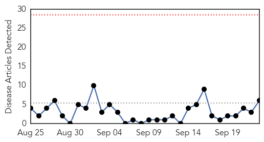
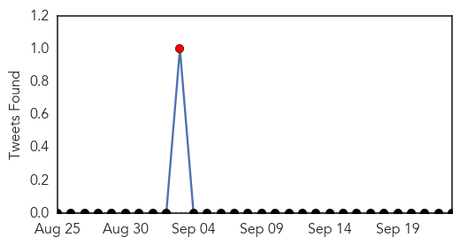
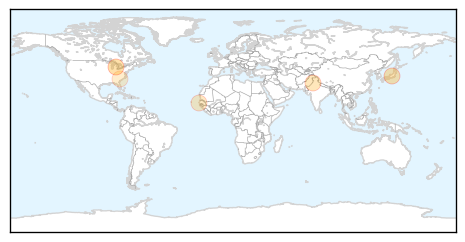
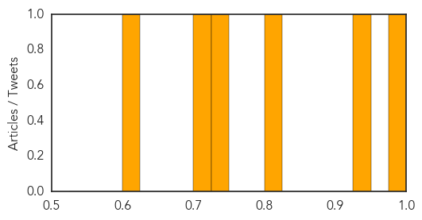
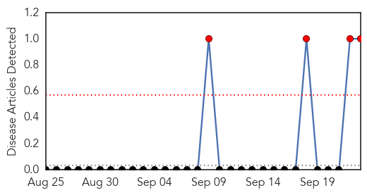
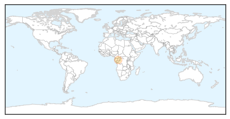

Hepatitis
30-Day Web Trend
0 alerts, 0 warnings

30-Day Twitter Trend
1 alerts, 0 warnings

Article Locations
Article Confidences
Top Articles:
- 0.986
- Ben Carson wrong on vaccine claim during second GOP debate
- 0.931
- Travelling abroad? Find out which shots you may need
- 0.804
- Centre for Science and Environment
- 0.733
- New virus trasmitted through blood transfusions discovered
- 0.701
- South Sudan MSF and UNICEF provide treatment to 16000 children in mass malaria campaign in Bentiu PoC
- 0.605
- Hepatitis A Lawsuit Filed Against Hardee’s After Thousands Exposed to Hepatitis A
Top Tweets:
-
No tweets found for Sep 23, 2015
Hemmorhagic Fever
30-Day Web Trend
4 alerts, 0 warnings

30-Day Twitter Trend
0 alerts, 0 warnings

Article Locations
Article Confidences

Top Articles:
Top Tweets:
-
No tweets found for Sep 23, 2015